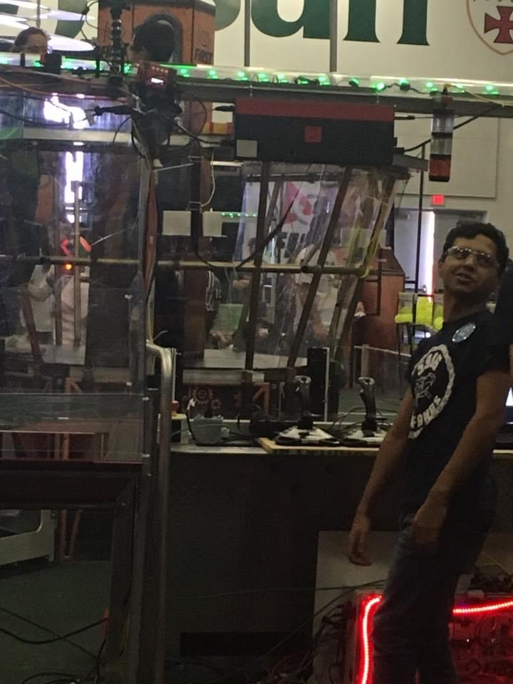

Howdy! My name is Christopher Hernandez and I am currently a Senior at Texas A&M. I was born and raised in San Antonio, TX. I currently work at H-E-B as cashier. I am majoring in Computer Engineering-Electrical Track with a double minor in Math and Cyber security. My major concentration is in Networking and Artificial Intelligence. I have experience coding in HTML, CSS, C++, Java, Python, Linux, MATLAB, R, Latex, LabVIEW, and Verilog. I also experience with working in a lab using a breadboard,voltmeter and oscilloscope.I also know how to solder wires back together. My latest project includes creating my own personal website about me.
I currently live in College Station, TX. Outside of school, I spend time working on personal projects like coding, designing, and building personal everyday things for my parents. I also love to take outdoor trips such as biking and hiking to parks around the Bryan-College Station area. And is I being not outdoors or working on projects you will see me enjoying time with my friends or playing video games. I currently play on my Xbox One and PS4.
In the spring, I volunteer at my old High School back in San Antonio for their robotics team. The team is called the Iron Fangs and they complete in the First Robotics Competition every year. The season start in January and it runs through April. I am currently the Programing and Drive Team coach. I teach the students how to code the robot correctly and teach about every part of the robot so that they understand how to code it properly. When I am not teaching the programming team, I am teaching the drive team the dos and donts of how to drive the robot. When they are not competing, I go to different events and volunteer.
Thank you for stopping by my page!
Email:chris26@tamu.edu
phone:210-273-2346
Instagram Facebook Twitter Spotify
